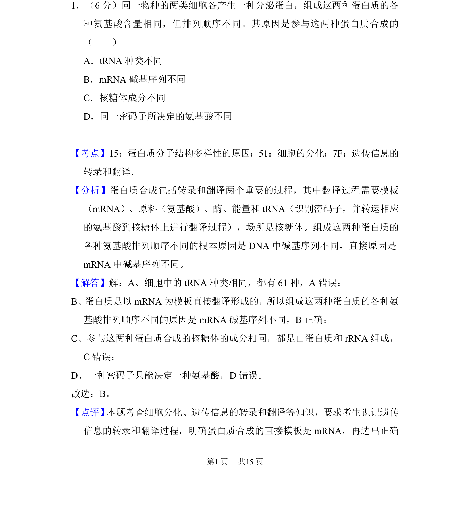
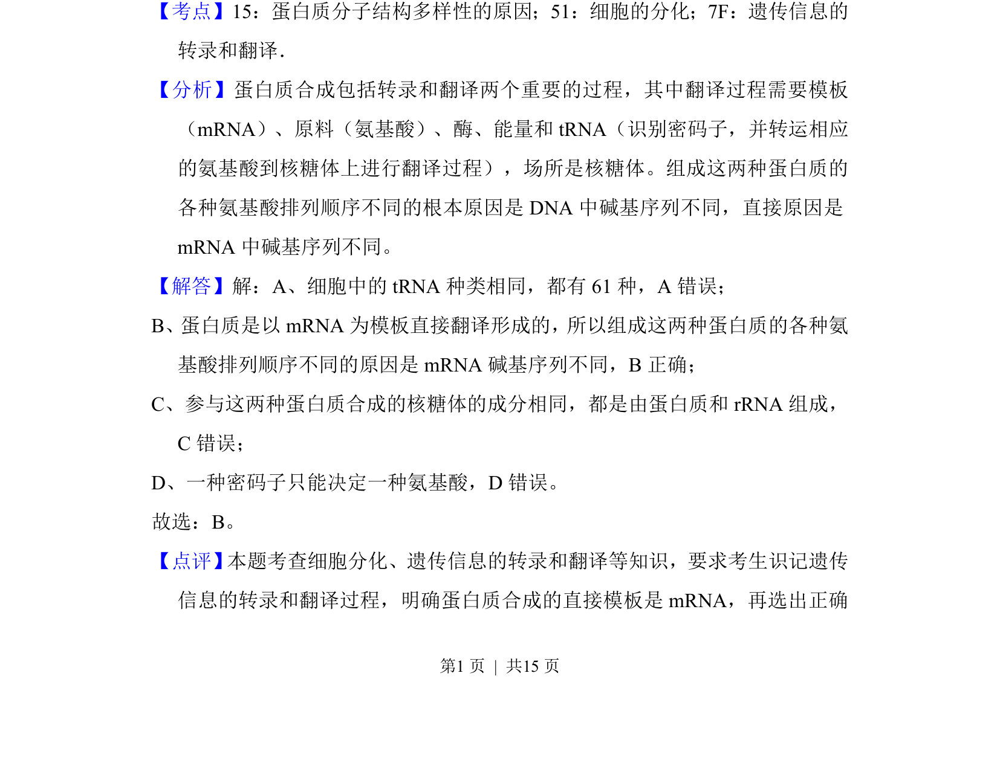

考点：蛋白质结构多样性 遗传信息翻译 mRNA模板 细胞分化

本题考查蛋白质结构多样性的直接原因，涉及遗传信息的翻译过程。

📄 原 PDF 第 1 页：
素材/真题/吉林/2008-2024·（吉林）生物高考真题/2012年高考生物试卷（新课标）（解析卷）.pdf
1．（6分）同一物种的两类细胞各产生一种分泌蛋白，组成这两种蛋白质的各 种氨基酸含量相同，但排列顺序不同。其原因是参与这两种蛋白质合成的 （ ） A．tRNA种类不同 B．mRNA碱基序列不同 C．核糖体成分不同 D．同一密码子所决定的氨基酸不同
【考点】15：蛋白质分子结构多样性的原因；51：细胞的分化；7F：遗传信息的 转录和翻译．菁优网版权所有 【分析】蛋白质合成包括转录和翻译两个重要的过程，其中翻译过程需要模板 （mRNA）、原料（氨基酸）、酶、能量和tRNA（识别密码子，并转运相应 的氨基酸到核糖体上进行翻译过程），场所是核糖体。组成这两种蛋白质的 各种氨基酸排列顺序不同的根本原因是DNA中碱基序列不同，直接原因是 mRNA中碱基序列不同。 【解答】解：A、细胞中的tRNA种类相同，都有61种，A错误； B、蛋白质是以mRNA为模板直接翻译形成的，所以组成这两种蛋白质的各种氨 基酸排列顺序不同的原因是mRNA碱基序列不同，B正确； C、参与这两种蛋白质合成的核糖体的成分相同，都是由蛋白质和rRNA组成， C错误； D、一种密码子只能决定一种氨基酸，D错误。 故选：B。 【点评】 本题考查细胞分化、遗传信息的转录和翻译等知识，要求考生识记遗传 信息的转录和翻译过程，明确蛋白质合成的直接模板是mRNA，再选出正确